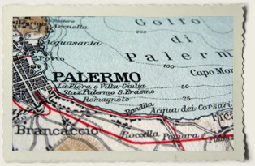
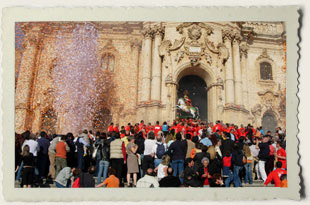

Memory Trails
Follow your ancestors' footprints visiting the places where they used to live.
Our professionals can provide useful tips and assistance to make your trip in Sicily unforgettable.
Off the beaten trails
Together with us you can safely walk along paths almost forgotten, different from the traditional mass tourism tracks, and enjoy some of the most beautiful scenery of Sicily.
Exploring Sicily
Discover astounding traces of many Mediterranean cultures, see the wildest spots and the most elegant gems of art...all in the same Island!
Why Sicily is not to be missed
See how past and present live together; find old disappearing trades and enjoy the comfort of modern Sicilian towns; be part of traditional Sicilian festivals.